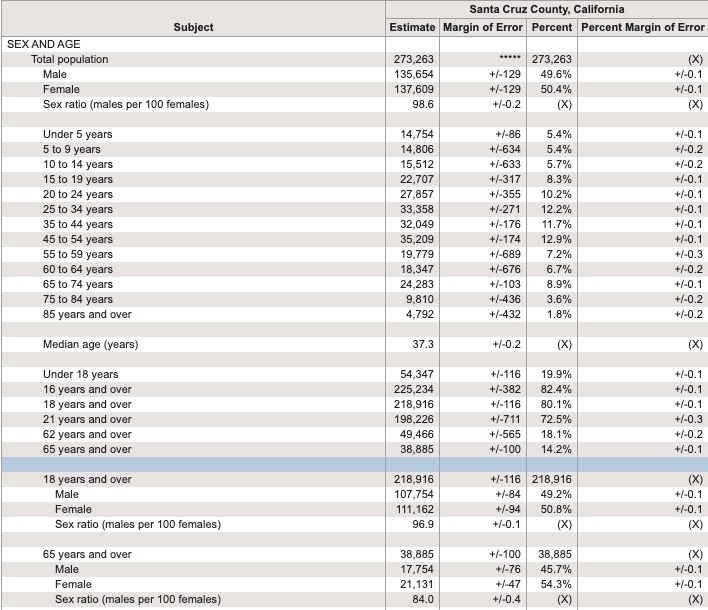
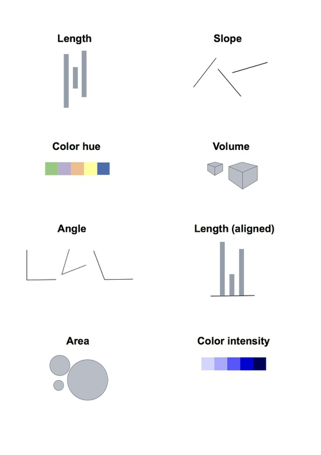
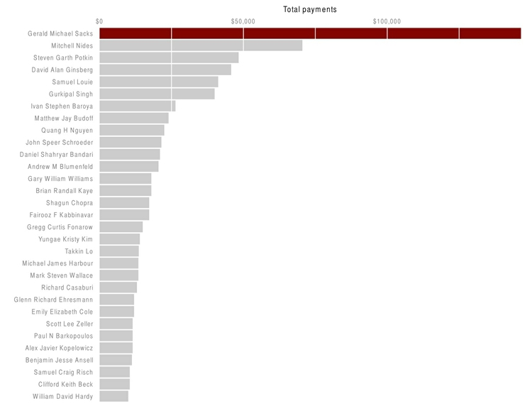
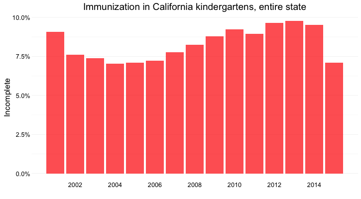

Principles of data analysis and visualization
Before we leap into making charts, we’ll consider the nature of data, and some basic principles that will help you to “interview” datasets to find and tell stories.
You don’t have to be a statistician, or an expert in design or visual perception, to make effective charts and maps. But understanding some basic principles will help you to tell a convincing and compelling story — enlightening rather than misleading your audience.
Types of data: categorical vs. continuous
Before analyzing a dataset, or attempting to draw a graphic, it’s important to consider what, exactly, you’re working with.
Statisticians often use the term “variable.” Database managers often talk about “fields.” These terms simply mean any measure or attribute describing a particular item, or “record,” in a dataset. For example, school students might gather data about themselves for a class project, recording their gender and eye color, and height and weight. There’s an important difference between gender and eye color, called “categorical” variables, and height and weight, termed “continuous.”
Categorical variables are descriptive labels given to individual records, assigning them to different groups. The simplest categorical data is dichotomous, meaning that there are just two possible groups — in an election, for instance, people either voted, or they did not. More commonly, there are multiple categories. When analyzing traffic accidents, for example, you might consider the day of the week on which each incident occurred, giving seven possible categories.
Continuous data is richer, consisting of numbers that can have a range of values on a sliding scale. When working with weather data, for instance, continuous variables might include the maximum and minimum temperatures and the total amount of rainfall recorded for each day.
Data journalists often also work with times and dates, which can be treated both as continuous or as categorical (days of the week, months of the years, etc.)
Datasets will usually contain a mixture of categorical and continuous variables. Here, for example, is a small part of a spreadsheet containing data on salaries for Major League Baseball players at the opening of the 2016 season:
(Source: Peter Aldhous, data from the Lahman Baseball Database)
This is a typical data table layout, with the individual records — the players — forming the rows and the variables recorded for each player arranged in columns. Here it is easy to recognize the categorical variables of teamID and teamName because they are each entered as text. The numbers for salary, expressed in full or in millions of dollars (salary_mil), are continuous variables.
Don’t assume, however, that every number in a dataset represents a continuous variable. Text descriptions can make datasets unwieldy, so database managers often adopt simpler codes, which are often be numbers, to store categorical data. You can see this in the following example, showing data on traffic accidents resulting in injury or death in California.
(Source: Peter Aldhous, from Transportation Injury Mapping System data)
Of the numbers seen here, only the YEAR, latitudes and longitudes (POINT_Y and POINT_X) and numbers of people KILLED or INJURED actually represent continuous variables. (Look carefully, and you will see that these numbers are justified right within each cell. The other numbers are justified left, like the text entries, because they were imported into the spreadsheet as text values.)
Like this example, many datasets are difficult to interpret without their supporting documentation. So each time you acquire a dataset, if necessary make sure you also obtain the “codebook” describing all of the variables/fields, and how they are coded. Here is the codebook for the traffic accident data.
How do I interview data? The basic operations
There are many sophisticted statistical methods for crunching data, beyond the scope of these classes. But the majority of a data journalist’s work involves the following simple operations:
Sort: Largest to smallest, oldest to newest, alphabetical etc.
Filter: Selecting a defined subset of the data.
Summarize/Aggregate: Deriving one value from a series of other values to produce a summary statistic. Examples include: count, sum, mean, median, maximum, minimum etc. Often you will group data into categories first, and then aggregate by group.
Join: Merging entries from two or more datasets based on common field(s), e.g. unique ID number, last name and first name.
We’ll return to these basic operations with data repeatedly as we process and visualize data.
Working with categorical data
Categorical variables are frequently used to assign groups for which you will draw separate bars, or circles, of whatever object you are using to represent the values of continuous variables. They are often distinguished by giving them different distinctive colors.
Categorical data can also be used to create new continuous variables. The most basic operation with categorical data is to aggregate it by counting the number of records that fall into each category. This gives a table of “frequencies.” Often these are divided by the total number of records, and then multiplied by 100 to show them as percentages of the total.
Here is an example, showing estimates of the breakdown of the population of Santa Cruz County, from the 2017 American Community Survey:

(Source: American FactFinder, U.S. Census Bureau)
Working with continuous data: consider the distribution
When handling continuous data, there are more possibilities for aggregation than simply counting: Tou can add the numbers to give a total, for example, or calculate an average.
But summarizing continuous data in a single value inevitably loses a lot of information held in variation within the data. Understanding this variation may be key to discovering the story that the data may tell, and deciding how to analyze and visualize it. So often the first thing to do when examining a dataset is to chart the distribution of each continuous variable. You can think of this as the “shape” of the dataset, for each variable.
Many variables, such as human height and weight, follow a “normal” distribution. If you draw a graph plotting the range of values in the data along the horizontal axis (also known as the X axis), and the number of individual data points for each value on the vertical or Y axis, a normal distribution gives a bell-shaped curve:
(Source: edited from Wikimedia Commons)
{kind=link}
This type of chart, showing the distribution as a smoothed line, is known as a density plot.
In this example, the X axis is labeled with multiples of a summary statistic called the “standard deviation.” This is a measure of the spread of the data: if you extend one standard deviation either side of the average, it will cover just over 68% of the data points; two standard deviations will cover just over 95%. In simple terms, the standard deviation is a single number that summarizes whether the curve is tall and thin, or short and fat.
Normal distributions are so common that many statistical methods have been invented specifically to work with them. It is also possible to run tests to tell whether data deviates significantly from a normal distribution, to check whether it’s valid to use these methods.
Sometimes, however, it’s very clear just from looking at the shape of a dataset that it is not normally distributed. Here, for example, is the distribution of 2016 Major League Baseball salaries, drawn as columns in increments of $500,000. This type of chart is called a histogram:

(Source: Peter Aldhous, data from the Lahman Baseball Database)
This distribution is highly “skewed.” Almost half of the players are paid less than $1 million, while there are just a handful of players who were paid more than $20 million; the highest-paid was pitcher Clayton Kershaw, paid $33 million by the Los Angeles Dodgers. Knowing this distribution may influence the story you would choose to tell from the data, the summary statistics you would choose to aggregate it, and the methods you might use to visualize it.
Beyond the average: measures of central tendency
Often, to tell a clear story, you may decide to aggregate continuous data into a single number.
Most people know how to calculate an average: add everything up, and divide this sum by the total number of values. Statisticians call this summary the “mean,” and for normally distributed data, it sits right on the top of the bell curve.
The mean is just one example of what statisticians call a “measure of central tendency.” The most common alternative is the median, which as described above is the number that sits in the middle of the data, when it is sorted in numerical order. (If you have an even number of values, and no single number occupies the middle position, it would be the average of the two middle values.)
Notice how leading media outlets, such as The Upshot at The New York Times, often use medians, rather than means, in graphics summarizing skewed distributions, such as incomes.
Statisticians also sometimes consider the “mode,” which is the value that appears most frequently in the dataset.
Across Major League Baseball at the start of the 2016 season, the mean salary was about $4.4 million. But when summarizing a distribution in a single value, we usually want to give a “typical” number. Here the mean is inflated by the vast salaries paid to a handful of star players, and may be a bad choice. The median salary of $1.5 million gives a more realistic view of what a typical MLB player was paid.
The mode is less commonly used, but in this case also tells us something interesting: it was $507,500, a sum earned by 33 out of the 853 players. This was the minimum salary paid under 2016 MLB contracts, which explains why it turns up more frequently than any other number. A journalist who considered the median, mode, and full range of the salary distribution may produce a richer story than one who failed to think beyond the conventional “average.”
Choosing bins for your data
Often you don’t want to summarize a variable in a single number. But that doesn’t mean you have to show the entire distribution. Frequently data analysts divide continuous data into a number of “bins,” to reveal how the groups falling into each bin differ from one another. A good example is this interactive graphic on the unemployment rate for different groups of Americans, published by The New York Times in November 2009.
In its base state, the graphic shows the overall jobless rate, and how this has changed over time. The buttons along the top allow you to filter the data to examine the rate for different groups. Most of the filtering is on categorical variables, but notice that the continuous variable of age is collapsed into a categorical variable dividing people into three groups: 15-24 years old, 24-44 years old, and 45 years or older.
To produce informative graphics that tell a clear story, you will often need to turn a continuous variable into a categorical variable by dividing it into bins. But how do you select the range of values for each bin?
There is no simple answer to this question, as it really depends on the story you are telling. In the jobless rate example, the bins divided the population into groups of young, mid-career and older workers, revealing how young workers in particular were bearing the brunt of the Great Recession.
But again, it helps to to look at the distribution, and experiment with different possibilities. For example, let’s say that we want to draw a map of wealth in different countries, dividing them into five categories based on gross domestic product (GDP) per capita in 2016. If we look at the distribution, drawn here in increments of $2,500, we will see that it is highly skewed, rather like the baseball salaries:
(Source: Peter Aldhous, from World Bank data)
Straight away we can see that just a tiny handful of countries had a GDP per capita of more than $50,000.
The maps below reveal how setting different ranges for the bins changes the story told by the data. For the first map, I set the lower value for the top bin at $40,000, and then gave the bins equal ranges:
(Source: Peter Aldhous, from World Bank data)
This might be useful for telling a story about how high per capita wealth is still concentrated into a small number of nations, but it does a fairly poor job of distinguishing between the per capita wealth of developing countries. And for poorer people, small differences in wealth make a big difference to living conditions.
So for the second map I set the boundaries so that roughly equal numbers of countries fell into each of the five bins. Now most of Western Europe joins the wealthiest bin, middle-income countries like Brazil, China, and Mexico are grouped in another bin, and there are more fine-grained distinctions between the per capita wealth of different developing countries:
(Source: Peter Aldhous, from World Bank data)
Some visualization software gives you the option of putting equal numbers of records into each bin — usually called “quantiles.” You can also calculate the boundaries between quantiles for yourself in a spreadsheet. Note that calculated quantiles won’t usually give you nice round numbers for the boundaries between bins. So you may want to adjust the values, as I did for the second map.
You may also want to examine histograms for obvious “valleys” in the data, which may be good places for the breaks between bins.
Design for the human brain
Visualizing data is a good way to communicate complex information, because we are highly visual animals, evolved to spot patterns and make visual comparisons. To visualize effectively, however, it helps to understand a little about how our brains process visual information. The mantra for the rest of this class is: Design for the human brain!
Visualization: encoding data using visual cues
Whenever we visualize, we are encoding data using visual cues, or “mapping” data onto variation in size, shape or color, and so on. There are various ways of doing this, as this primer illustrates:

These cues are not created equal, however. In the mid-1980s, statisticians William Cleveland and Robert McGill ran some experiments with human volunteers, measuring how accurately they were able to perceive the quantitative information encoded by different cues. This is what they found:
This perceptual hierarchy of visual cues is very important. When making comparisons with continuous variables, aim to use cues near the top of the scale wherever possible.
That doesn’t mean the other possibilities are always to be avoided in visualization. Indeed, as we’ve already noted, color hue can a good way of encoding categorical data. The human brain is particularly good at recognizing patterns and differences. This means that variations in color, shape and orientation, while poor for accurately encoding the precise value of continuous variables, can be good choices for representing categorical data.
You can also combine different visual cues into the same graphic to encode different variables. But always think about the main messages you are trying to impart, and where you can use visual cues near the top of the visual heirarchy to communicate that message most effectively.
To witness this perceptual hierarchy, look at the following visual encodings of the same simple dataset. Do the bars, or the circles, make it easiest to “read” the numerical values that are encoded?
If you have spent any time reading blogs on data visualization, you will know the disdain in which pie charts are often held. Pie charts encode continuous variables using the angles made in the center of the circle. It is certainly true that angles are harder read accurately than aligned bars of columns. However, note that encoding data using the area of circles — which has become a “fad” in data visualization in recent years — makes even tougher demands on your audience.
But this doesn’t mean that everything becomes a bar chart
Length on an aligned scale may be the best option to allow people to compare numbers accurately, but that doesn’t mean the other possibilities are always to be avoided in visualization. Indeed, color hue is a good way of encoding categorical data. The human brain is particularly good at recognizing patterns and differences. This means that variations in color, shape and orientation, while poor for accurately encoding the precise value of continuous variables, can be good choices for representing categorical data.
You can also combine different visual cues into the same graphic to encode different variables. But always think about the main messages you are trying to impart, and where you can use visual cues near the top of the visual hierarchy to communicate that message most effectively.
Which type of chart should I use?
This is a frequently asked question, and the best answer is: Experiment with different charts, to see which works best to liberate the story in your data. Some visualization software will suggest chart types for you to try. However, it is good to have a basic framework to help you prioritize particular chart types for particular visualization tasks. Although it is far from comprehensive, and makes some specific chart suggestions that I would not personally endorse, the “chart of charts” published on the Extreme Presentation Method website provides a useful framework by providing answers to the question: “What would you like to show?”
It considers four possible answers: the distribution of a single continuous variable; the relationship between two continuous variables; comparisons between items for a single continuous variable; and composition, or how parts make up the whole.
We’ve already discussed distibutions, so let’s now consider the others one by one:
Relationships between variables: scatter plots and trend lines
When testing the relationship between two variables, statisticians will usually draw a simple chart called a scatter plot, in which the records in a dataset are plotted as points according to their scores for each of the two variables. (This uses the visual cue of position on an aligned scale, which sits near to the top of the perceptual hierarchy.)
Here is an example scatter plot, illustrating a controversial theory claiming that the extent to which a country has developed a democratic political system is driven largely by the historical prevalence of infectious disease:
(Source: Peter Aldhous, data from the Global Infectious Diseases and Epidemiology Network and Democratization: A Comparative Analysis of 170 Countries)
The convention when drawing scatter plots is to put the variable suspected to be the causal factor, called the “explanatory” variable, on the horizontal or X axis, and the “response” variable on the vertical or Y axis.
When producing any chart based on the scatter plot format, it’s a good idea to follow this convention, because otherwise you are likely to confuse people who are used to viewing such graphs.
The example above also shows a straight line drawn through the points. This is known as a “trend line,” or the “line of best fit” for the data, and was calculated by a method called “linear regression.” It is a simple example of what statisticians call “fitting a model” to data.
Models are mathematical equations that allow statisticians to make predictions. The equation for this trend line is:
Y = -1.85*X + 104.45
Here X is the infectious disease prevalence score, Y is the democratization score, and 104.45 is the value at which the trend line would cross the vertical axis at X = 0. The slope of the line is -1.85, which means that when X increases by a single point, Y tends to decrease by 1.85 points. (For a trend line sloping upwards from left to right, the slope would be a positive number.)
The data used for this graph doesn’t include all of the world’s countries. But if you knew the infectious disease prevalence score for a missing nation, you could use the equation or the graph to predict its likely democratization score. To see how this works multiply 30 by -1.85, then add 104.45. The answer is roughly 49, and you will get the same result if you draw a vertical line up from the horizontal axis for an infectious disease prevalence score of 30, and then draw a horizontal line from where this crosses the trend line to the vertical axis at X = 0.
Relationships between variables: correlation and its pitfalls
Some of the most powerful stories that data can tell examine how one variable relates to another. This video from a BBC documentary made by Hans Rosling of the Gapminder Foundation, for example, explores the relationship between life expectancy in different countries and the nations’ wealth. This is a bubble plot, a relative of the scatter plot in which the size of the bubbles encodes a third variable — here each country’s population:
(Source: BBC/Gapminder)
Correlation refers to statistical methods that test the strength of the relationship between two variables recorded for each of the records in a dataset. Correlations can either be positive, which means that two variables tend to increase together; or negative, which means that as one variable increases in value, the other one tends to decrease.
In the disease and democracy example above there is a statistically significant negative correlation, but that doesn’t prove that low rates of infectious disease made some countries more democratic. Cause-and-effect could also work the other way round: societies evolving toward democracy might haved place greater value on their citizens’ lives, and made more effort to prevent and treat infectious diseases.
More fundamentally, correlation can never prove causation. For example, there is a statistically significant correlation between children’s shoe sizes and their reading test scores, but clearly having bigger feet doesn’t make a child a better reader. In reality, older children are likely both to have bigger feet and be better at reading — the causation lies elsewhere.
Here, the child’s age and experience with reading are “lurking” variables. Lurking variables are a general problem in data analysis, not just in tests of correlation, and some can be hard even for experts to spot.
So be wary of falling into similar traps when drawing any chart that illustrates a correlation, or implies a relationship between two variables. While you may not be able to gather all of the necessary data and run statistical tests, take special care to think about possible lurking variables.
Comparisons between variables: bars and columns
Applying the perceptual hierarchy of visual cues, bar and column charts are usually the best options for simple comparisons. Vertical columns often work well when few items are being compared, while horizontal bars may be a better option when there are many items to compare, as in this example from The Wall Street Journal, illustrating common passwords revealed by a 2010 data breach at Gawker Media.
Here I have used a bar chart to show payments for speaking about drug prescription made to doctors in California by the drug company Pfizer in the second half of 2009, using data gathered in reporting this story.

(Source: Peter Aldhous)
There is one sacrosanct rule with bar and column charts: Because they rely on the length of the bars to encode data, you should start the bars at zero. Failing to do this will mislead your audience. Graphics aired by Fox News have been criticized for disobeying this rule, see here for an example.
Comparisons between variables: change over time
Bar or column charts can also be used to illustrate change over time, but there are other possibilities, as shown in these charts showing participation in the federal government’s food stamps nutritional assistance program, from 1969 to 2016.
(Source: Peter Aldhous, from U.S. Department of Agriculture data)
Each of these charts communicates the same basic information with a subtly different emphasis. The column chart emphasizes each year as a discrete point in time, while the line chart focuses on the overall trend or trajectory. The dot-and-line chart is a compromise between these two approaches, showing the trend while also drawing attention to the value for each year. (The dot-column or lollipop chart is an unusual variant of a column chart, included here to show another possible design approach.)
When comparing very many items over time, another approach may be needed to avoid charts getting too busy. One option is to encode data using color, dropping down the perceptual hierarchy of visual cues, to create a type of chart known as a heat map, as used here by The Wall Street Journal to illustrate the effects of vaccination on infectious disease rates.
Composition: parts of the whole
This is where the much-maligned pie chart does have a role, although it is not the only option. Which of these two representations of an August 2014 poll of public opinion on President Barack Obama’s job performance makes the differences between his approval ratings for difference policy areas easiest to read, the pie charts or the stacked column charts below?

(Source: Peter Aldhous, from CBS poll data, via PollingReport.com)
These graphics involve both comparison and composition — a common situation in data journalism.
In class, we’ll discuss how both of these representations of the data could have been improved, using the perceptual hierarchy of visual cues.
I would suggest abandoning pie charts if there are any more than three parts to the whole, as they become very hard to read when there are many segments. ProPublica’s graphics style guide goes further, allowing pie charts with two segments only.
Recent research into how people perceive composition visualizations with just categories suggests that the best approach may actually be a square chart. Surprisingly, this is an example where an encoding of area seems to beat length for accuracy:
(Source: Eagereyes)
Charts that explictly divide a square or rectangle into component squares, sometimes called waffle charts, can be very effective, as in this visualization of voting in the 2016 presidential primary elections by The New York Times, or this chart of mine showing the number of US Nobel Laureates who were born abroad:

(Source: BuzzFeed News)
Another approach, known as a treemap, uses area to encode the size of parts of the whole. Although area falls lower on the perceptual hierarchy of visual cues than position/length, it can be effective to display “nested” variables — where each part of the whole is broken down into further parts. Here I used a treemap for BuzzFeed News to show the number of people killed and injured in individual terrorist attacks by idealogical category over two decades:
(Source: BuzzFeed News)
Composition: change over time
Data journalists frequently need to show how parts of the whole vary over time. Here is an example from The New York Times, illustrating the development of drought across the United States, which uses a stacked columns format, in this case with no space between the columns.
In the drought example, the size of the whole remains constant. Even if the size of the whole changes, this format can be used to show changes in the relative size of parts of the whole, by converting all of the values at each time interval into percentages of the total.
Stacked column charts can also be used to simultaneously show change in composition over time and change in the size of the whole. This example is from one of my own articles, looking at change over time in the numbers of monkeys used in the U.S. in experiments involving unalleviated pain or distress.
(Source: BuzzFeed News)
Just as for simple comparisons over time, columns are not the only possibility when plotting changes in composition over time. The equivalent of the line chart, stressing the overall trend rather than values at discrete points in time, is the stacked area chart. Again, these charts can be used to show change of time with the size of the whole held constant, or varying over time. Here The New York Times used this format to show the countries of origin over time for players in the world’s leading sports leagues:
(Source: The New York Times)
What else might you like to show? Connections and geography
The chart types thought-starter we have used as a framework so far doesn’t consider two important answers to the question it poses: connections, and geography.
Making connections: network graphs
Journalists are frequently interested in exploring connections — which donors gave money to which candidate, how companies are connected through members of their boards, and so on. Network graphs can visualize these questions, and are sometimes used in news media. Here, for example, The New York Times showed connections between the national teams, players and club teams at the 2014 soccer World Cup.
If you are interested in learning how to make network graphs, I have tutorials here and here.
Making data-driven maps: know their limitations
Data can be put onto maps in various ways. When continuous variables are plotted to points, one common approach is to use circles centered on each point, sized according to the data values. Here is a example of this approach from The New York Times, used to show fatalities caused by tornadoes.
When plotting data to geographical areas, the most common approach is to fill the areas with color, with its intensity encoded according to the data values, like my maps of GDP per capita. These are known as choropleth maps.
You can also combine both approaches in a single map, as in this example, showing historical earthquakes and estimated seismic risk:
(Source: Peter Aldhous, from U.S. Geological Survey data)
Choropleth maps have an important drawback: Our eyes are drawn to expanses of color, which means that large geographic areas will attract greater attention, whether or not these are actually more important for the story you are trying to tell from the data. This becomes a particular problem with maps illustrating election results, where the significance of small geographical areas with large populations that have a major impact on the overall result gets downplayed, while sparsely populated large areas are overemphasized. In such cases, scaled circles located to the center of geographic areas can be a better option. Look at the “counties” and “size of lead” views in these maps of the 2012 Presidential election from The New York Times, and see which you think gives the clearest view of who won.
Now look again at the perceptual hierarchy of visual cues, and note that area and color intensity — the main options available when putting data onto maps — sit fairly low on the heirarchy. This means that if you want to show differences in a continuous variable between U.S. states, for example, a map may be a poorer choice than a bar chart. If there is an interesting story in the geography that you don’t want to lose, consider including a map as well as a bar chart, but perhaps make the map a secondary element.
Case study: Immunization in California kindergartens
Now we’ll explore a dataset at different levels of analysis, to show how different visual encodings may be needed for different visualization tasks with the same data.
This data, from the California Department of Public Health, gives numbers on immunization and enrollment at kindergartens across the state. The data is provided at the level of individual schools, but can be aggregated to look at counties, or the entire state.
When looking at change over time at the state level, the perceptual hierarchy makes a column chart a good choice:

(Source: Peter Aldhous, from California Department of Public Health data)
Notice that I’ve focused on the percentage of children with incomplete vaccination, rather than the percentage complete, for two reasons:
- The differences between the lengths of the bars are greater, and so is easier to read.
- More importantly, incomplete vaccination is what increases the risk of infectious disease outbreaks, which is why we care about this data.
But as for the food stamps data, a bar chart is not the only choice:
Here’s the same information presented as a line chart:

(Source: Peter Aldhous, from California Department of Public Health data)
Notice that here, I haven’t started the Y axis at zero. This would be unforgivable for a bar chart, where the length of the bar is the visual encoding, and so starting at an arbitrary value would distort the comparison between the bars. Here, however, I’m emphasizing the relative slope, to show change over time, so starting at zero is less crucial.
And here’s the data as a dot-and-line chart:
(Source: Peter Aldhous, from California Department of Public Health data)
Here, I’ve returned to a Y axis that starts at zero, so that the relative positions of the points can be compared accurately.
But what if we want to look at individual counties? When comparing a handful of counties, the dot-and-line chart, combining the visual cues of position on an aligned scale (for the yearly values) and slope (for the rate of change from year to year) works well:
(Source: Peter Aldhous, from California Department of Public Health data)
But there are 58 counties in California, and trying to compare them all using a dot-and-line chart results in chaos:

(Source: Peter Aldhous, from California Department of Public Health data)
In this case, it makes sense to drop down the perceptual hierarchy, and use the intensity of color to represent the percentage of incomplete immunization:

(Source: Peter Aldhous, from California Department of Public Health data)
This type of chart is called a heat map. It provides a quick and easy way to scan for the counties and years with the highest rates of incomplete immunization.
What if we want to visualize the data for every kindergarten on a single chart, to give an overview of how immunization rates vary across schools?
Here’s my best attempt at this:

(Source: Peter Aldhous, from California Department of Public Health data)
Here I’ve drawn a circle for every school, and used their position on an aligned scale, along the Y axis, to encode the percentage of incomplete immunization. I’ve also used the area of the circles to encode the enrollment at each kindergarten — but this is secondary to the chart’s main message, which is about the variation of immunization rates across schools.
Using color effectively
Color falls low on the perceptual hierarchy of visual cues, but as we have already seen, it is often deployed to highlight particular elements of a chart, and sometimes to encode data values. Poor choice of color schemes is a problem that bedevils many news graphics, so it is worth taking some time to consider how to use color to maximum effect.
It helps to think about colors in terms of the color wheel, which places colors that “harmonize” well together side by side, and arranges those that have strong visual contrast — blue and orange, for instance — at opposite sides of the circle:

(Source: Wikimedia Commons)
{kind=link}
When encoding data with color, take care to fit the color scheme to your data, and the story you’re aiming to tell. As we have already seen, color is often used to encode the values of categorical data. Here you want to use “qualitative” color schemes, where the aim is to pick colors that will be maximally distinctive, as widely spread around the color wheel as possible.
When using color to encode continuous data, it usually makes sense to use increasing intensity, or saturation, of color to indicate larger values. These are called “sequential” color schemes:
In some circumstances, you may have data that has positive and negative values, or which highlights deviation from a central value. Here, you should use a “diverging” color scheme, which will usually have two colors reasonably well separated on the color wheel as its end points, and cycle through a neutral color in the middle:
Here are some examples of qualitative, sequential and diverging color schemes:
Choosing color palettes is a complex science and art, but there is no need to “roll your own” for every graphic you make. Many visualization tools include suggested color palettes, and I often make use of the ColorBrewer website. Orginally designed for maps, but useful for charts in general, these color palettes have been rigorously tested to be maximally informative.
You will notice that the suggestions made by ColorBrewer can be displayed according to their values on three color “models”: HEX, RGB and CMYK. Here is a brief explanation of these and other common color models.
RGB Three values, describing a color in terms of combinations of red, blue and green light, with each scale ranging from 0 to 255; sometimes extended to RGB(A), where A is alpha, which encodes transparency. Example:
rgb(169, 104, 54).HEX A six-figure “hexadecimal” encoding of RGB values, with each scale ranging from hex 00 (equivalent to 0) to hex ff (equivalent to 255); HEX values will be familiar if you have any experience with web design, as they are commonly used to denote color in HTML and CSS. Example:
#a96836CMYK Four values, describing a color in combinations of cyan, magenta, yellow and black, relevant to the combination of print inks. Example:
cmyk(0, 0.385, 0.68, 0.337)HSL Three values, describing a color in terms of hue, saturation and lightness (running from black, through the color in question, to white). Hue is the position on a blended version of the color wheel in degrees around the circle ranging from 0 to 360, where 0 is red. Saturation and lightness are given as percentages. Example:
hsl(26.1, 51.6%, 43.7%)HSV/B Similar to HSL, except that brightness (sometimes called value) replaces lightness, running from black to the color in question.
hsv(26.1, 68.07%, 66.25%)
Colorizer is one of several web apps for picking colors and coverting values form one model to another.
If you intend to roll your own color scheme, try experimenting with I want hue for qualitative color schemes and the Chroma.js Color Palette Helper for sequential and diverging palettes
You will also notice that ColorBrewer allows you to select color schemes that are colorblind safe. Surprisingly, many news organizations persist in using color schemes that exclude a substantial minority of their audience. Red and green lie on opposite sides of the color wheel, and also can be used to suggest “good” or “go,” versus “bad” or “stop.” But about 5% of men have red-green colorblindness, also known as deuteranopia.
Install Color Oracle to simulate how your charts and maps will look to people with various forms of colorblindness.
Viz Palette is an excellent tool for experimenting with different color schemes, which includes color blindness simulation.
Using chart furniture, minimizing chart junk, highlighting the story
In addition to the data, encoded through the visual cues we have discussed, various items of chart furniture can help frame the story told by your data:
Title and subtitle These provide context for the chart.
Coordinate system For most charts, this is provided by the horizontal and vertical axes, giving a cartesian system defined by X and Y coordinates; for a pie chart it is provided by angles around a circle, called a polar coordinate system.
Scale Labeled tick marks and grid lines can help your audience read data values.
Labels You will usually want to label each axis. Think about other labels that may be necessary to explain the message of your graphic.
Legend Where you use color or shape to encode data, you will often need a legend to explain this encoding.
Source information Usually given as a footnote. Don’t forget this!
Here are those elements displayed on a sample chart. Note that I’ve included two possible positions for a Y axis label. The version at the top of the chart can be a good option, as it doesn’t require people to tilt their heads to read vertical text.
Chart furniture can also be used to encode data, as in this example, which shows the terms of New York City’s police commissioners and mayors with reference to the time scale on the X axis.
Think carefully about how much chart furniture you really need, and make sure that the story told by your data is front and center. Think data-ink: What proportion the ink or pixels in your chart is actually encoding data, and what proportion is embellishment, adding little to your story?
Here is a nice example of a graphic that minimizes chart junk, and maximizes data-ink. Notice how the Y axis doesn’t need to be drawn, and the gridlines are an absence of ink, consisting of white lines passing through the columns. (I also used this device in my bar chart of Pfizer payments to doctors, above.) Contrast these examples with the proliferation of chart junk in the earlier misleading Fox News column chart.
Simple annotations and spot-color highlights can be particularly useful to emphasize your story, as shown in the following scatter plots, used here to show the relationship between the median salaries paid to women and men for the same jobs in 2018. In this case there is no suggestion of causation; here the scatter plot format is being used to display two distributions simultaneously — see the chart types thought-starter.
It is clear from the first, unlabeled plot, that male and female salaries for the same job are strongly correlated, as we would expect, but that relationship is not very interesting. Notice also how I have used transparency to help distinguish overlapping individual points.
(Source: Peter Aldhous, from U.S. Bureau of Labor Statistics data)
What we are interested in here is whether men and women are compensated similarly for doing the same jobs. The story in the data starts to emerge if you add a line of equal pay, with a slope of 1 (note that this isn’t a trend line fitted to the data). Here I have also highlighted the job in which women in 2018 enjoyed a the biggest pay gap over men:
(Source: Peter Aldhous, from U.S. Bureau of Labor Statistics data)
Notice how adding another line, representing a 25% pay gap, and highlighting the job where the pay gap between men and women is largest, emphasizes the real story about the gender pay gap:
(Source: Peter Aldhous, from U.S. Bureau of Labor Statistics data)
Other pitfalls to avoid
If you ever decide to encode data using area, be sure to do so correctly. Hopefully it is obvious that if one unit is a square with sides of length one, then the correct way to represent a value of four is a square with sides of length two (2*2 = 4), not a square with sides of length four (4*4 = 16).
Mistakes are frequently made, however, when encoding data by the area of circles. During the 2019 women’s soccer World Cup, The Guardian ran this graphic:
(Source: The Guardian)
Crticis pointed out on Twitter that the data had been scaled by the radius of each circle, not its area. Because area = π * radius^2, you need to scale the circles by the square root of the radius to achieve the correct result, shown here in an amended version of the graphic:
(Source: The Guardian)
Some software packages allow users to create charts with 3-D effects and some graphic designers produce customized charts with similar aesthetics. The problem is that that it is very hard to read the data values from 3-D representations, as this example, from Good magazine, illustrates.
A good rule of thumb for data visualization is that trying to represent three dimensions on a two dimensional printed or web page is almost always one dimension too many.
Above all, aim for clarity and simplicity in your chart design. Clarity should trump simplicity. As Albert Einstein is reputed to have said: “Everything should be made as simple as possible, but not simpler.”
Try breaking the story down into scenes
Many stories have a step-by-step narrative, and different charts may tell different parts of the story. So think about communicating such stories through a series of graphics. This is a good reason to experiment with different chart types when exploring a new dataset.
Good practice for interactives
Nowadays the primary publication medium for many news graphics is the web or apps on mobile platforms, rather than print, which opens up many possibilities for interactivity. This can greatly enhance your ability to tell a story, but it also creates new possibilities to confuse and distract your audience — think of this as interactive chart junk.
A good general approach for interactive graphics is to provide an overview first, and then allow the interested user to zoom or filter to dig deeper into the data. In such cases, the starting state for an interactive should tell a clear story: If users have to make an effort to dig into a graphic to get anything from it, few are likely to do so. Indeed, assume that much of your audience will spend only a short time interacting with the data.
Similarly, don’t hide labels or information essential to understanding the graphic in tooltips that are accessed only on clicks or hovers. This is where to put more detailed information for users who have sufficient interest to explore further.
Make the controls for an interactive obvious — play buttons should look like play buttons, for instance. You can include a few words of explanation, but only a very few: as far as possible, how to use the interactive should be intuitive, and built into its design.
The interactivity of the web also facilitates a scene-by-scene narrative.
“Mobile-first” may change your approach
Increasingly, news content is being viewed on mobile devices with small screens.
At the most basic level, this means making graphics “responsive,” so that their size adjusts to screen size. But there is more to effective design for mobile than this.
We have already discussed the value of small multiples, which can be made to reflow for different screen sizes.
This interactive, exploring spending on incarceration by block in Chicago, is an example of organizing and displaying the same material differently for different screen sizes. Open it up on your laptop then reduce the size of your browswer window to see how it behaves.
Again, a step-by-step narrative can be a useful device in overcoming the limitations of a small screen. This interactive, exploring school segregation by race in Florida, is a good example of this approach:
Be careful with animation
Animation in interactives can be very effective. But remember the goal of staying true to the ‘feel’ of the data. Animated images evolve over time, so animation can be particularly useful to encode data that changes over time. But again you need to think about what the human brain is able to perceive. Research has shown that people have trouble tracking more than about four points at a time. Try playing Gapminder Tools without the energetic audio commentary of Hans Rosling’s “200 Countries” video, and see whether the story told by the data is clear.
Animated transitions between different states of a graphic can be pleasing. But overdo it, and you’re into the realm of annoying Powerpoint presentations with items zooming into slides with distracting animation effects. It’s also possible for elegant animated transitions to “steal the show” from the story told by the data, which arguably is the case for this exploration by The New York Times of President Obama’s 2013 budget request to Congress.
Sketch and experiment to find the story
One important message I’d like you to take from this session is that there are many ways of visualizing the same data. Effective static graphics and interactives do not usually emerge fully formed. They usually arise through sketching and experimentation.
As you sketch and experiment with data, use the framework suggested by the chart selector thought-starter to prioritize different chart types, and definitely keep the perceptual hierarchy of visual cues at the front of your mind. Remember the mantra: Design for the human brain!
Also, show your experiments to friends and colleagues. If people are confused or don’t see the story, you may need to try a different approach.
Further reading
Alberto Cairo: The Functional Art: An Introduction to Information Graphics and Visualization
Nathan Yau: Data Points: Visualization That Means Something
Sarah Cohen: Numbers in the Newsroom: Using Math and Statistics in News
Philip Meyer: Precision Journalism: A Reporter’s Introduction to Social Science Methods